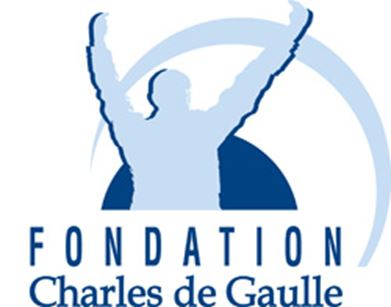
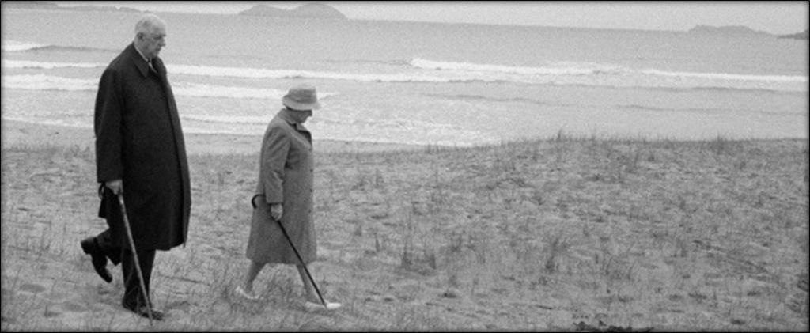
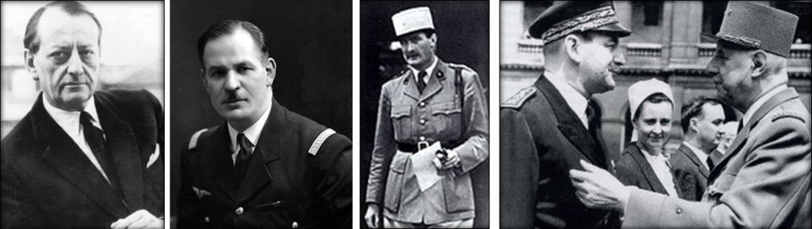
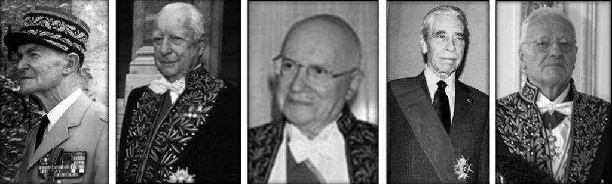
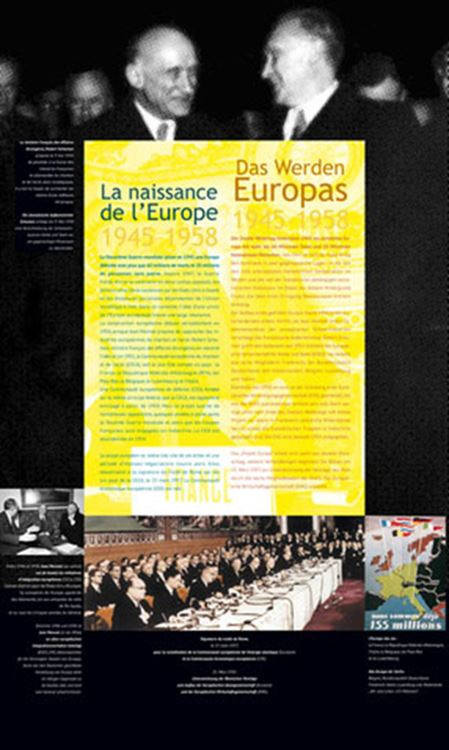
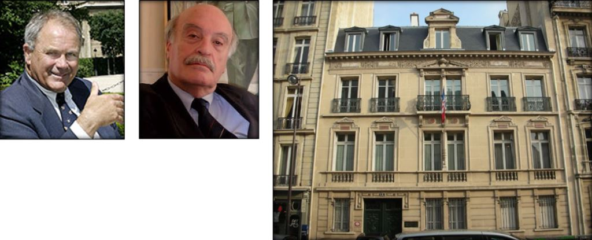
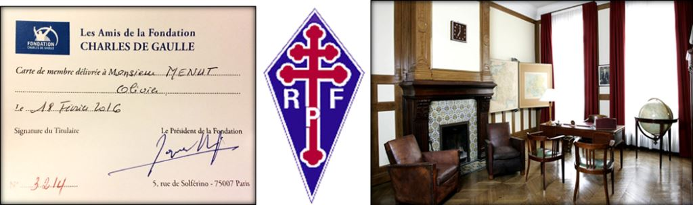

<!DOCTYPE html>
<html  >
<head>
  <!-- Site made with Mobirise Website Builder v4.11.4, https://mobirise.com -->
  <meta charset="UTF-8">
  <meta http-equiv="X-UA-Compatible" content="IE=edge">
  <meta name="generator" content="Mobirise v4.11.4, mobirise.com">
  <meta name="viewport" content="width=device-width, initial-scale=1, minimum-scale=1">
  <link rel="shortcut icon" href="assets/images/logo-1-128x128.png" type="image/x-icon">
  <meta name="description" content="A l’occasion du référendum sur la réforme du Sénat et la régionalisation, qui intervenait un an à peine après le désordre social et institutionnel de mai 1968, le général de Gaulle déclarait en avril 1969, que « De la réponse que fera le pays va dépendre évidemment soit la continuation de mon mandat, soit aussitôt mon départ » puis « Si je suis désavoué par une majorité d'entre vous, je cesserai aussitôt d'exercer mes fonctions... Si au contraire je reçois la preuve de votre confiance, je poursuivrai mon mandat jusqu'à son terme régulier en 1972 ».">
  
  <title>La Fondation Charles de Gaulle. Transmettre la mémoire de « l’Homme du 18 Juin »</title>
  <link rel="stylesheet" href="https://fonts.googleapis.com/css?family=Montserrat:400,700">
  <link rel="stylesheet" href="https://fonts.googleapis.com/css?family=Raleway:100,100i,200,200i,300,300i,400,400i,500,500i,600,600i,700,700i,800,800i,900,900i">
  <link rel="stylesheet" href="assets/et-line-font-plugin/style.css">
  <link rel="stylesheet" href="https://fonts.googleapis.com/css?family=Lora:400,700,400italic,700italic&subset=latin">
  <link rel="stylesheet" href="assets/tether/tether.min.css">
  <link rel="stylesheet" href="assets/bootstrap/css/bootstrap.min.css">
  <link rel="stylesheet" href="assets/dropdown/css/style.css">
  <link rel="stylesheet" href="assets/animate.css/animate.min.css">
  <link rel="stylesheet" href="assets/socicon/css/styles.css">
  <link rel="stylesheet" href="assets/theme/css/style.css">
  <link rel="preload" as="style" href="assets/mobirise/css/mbr-additional.css"><link rel="stylesheet" href="assets/mobirise/css/mbr-additional.css" type="text/css">
  
  
  
</head>
<body>

<!-- Analytics -->
<!-- Global site tag (gtag.js) - Google Analytics -->
<script async src="https://www.googletagmanager.com/gtag/js?id=UA-109039242-1"></script>
<script>
  window.dataLayer = window.dataLayer || [];
  function gtag(){dataLayer.push(arguments);}
  gtag('js', new Date());

  gtag('config', 'UA-109039242-1');
</script>
<!-- /Analytics -->


  <section id="menu-eg" data-rv-view="12264">

    <nav class="navbar navbar-dropdown transparent navbar-fixed-top bg-color">
        <div class="container">

            <div class="mbr-table">
                <div class="mbr-table-cell">

                    <div class="navbar-brand">
                        <a href="http://revuemethode.org" class="navbar-logo"></a>
                        <a class="navbar-caption" href="http://revuemethode.org">REVUE<br>MÉTHODE<br></a>
                    </div>

                </div>
                <div class="mbr-table-cell">

                    <button class="navbar-toggler pull-xs-right hidden-md-up" type="button" data-toggle="collapse" data-target="#exCollapsingNavbar">
                        <div class="hamburger-icon"></div>
                    </button>

                    <ul class="nav-dropdown collapse pull-xs-right nav navbar-nav navbar-toggleable-sm" id="exCollapsingNavbar"><li class="nav-item"><a class="nav-link link" href="numeros.html">TOUS LES NUMÉROS</a></li><li class="nav-item dropdown"><a class="nav-link link dropdown-toggle" data-toggle="dropdown-submenu" href="https://sf.donntu.org" aria-expanded="false">RUBRIQUES</a><div class="dropdown-menu"><a class="dropdown-item" href="politique-societe.html">Politique &amp; Société</a><a class="dropdown-item" href="culture.html">Culture</a><a class="dropdown-item" href="histoire.html">Histoire</a><a class="dropdown-item" href="sciences-techniques.html">Sciences &amp; Techniques</a><a class="dropdown-item" href="donbass.html">Donbass</a><a class="dropdown-item" href="france.html">France</a><a class="dropdown-item" href="russie.html">Russie</a><a class="dropdown-item" href="sante-gastronomie.html">Santé &amp; Gastronomie</a></div></li><li class="nav-item dropdown"><a class="nav-link link" href="equipe.html" aria-expanded="false">NOTRE ÉQUIPE</a></li><li class="nav-item"><a class="nav-link link" href="recommandations.html">NOS RECOMMANDATIONS</a></li><li class="nav-item nav-btn"><a class="nav-link btn btn-white btn-white-outline" href="#bottom">ABONNEMENT</a></li></ul>
                    <button hidden="" class="navbar-toggler navbar-close" type="button" data-toggle="collapse" data-target="#exCollapsingNavbar">
                        <div class="close-icon"></div>
                    </button>

                </div>
            </div>

        </div>
    </nav>

</section>

<!--<section class="engine"><a href="https://mobirise.info/t">amp templates</a></section>--><section class="mbr-section article mbr-after-navbar" id="msg-box8-eh" data-rv-view="12266" style="background-image: url(assets/images/logo-mini-723x161.jpg); padding-top: 120px; padding-bottom: 40px;">

    
    <div class="container">
        <div class="row">
            <div class="col-md-8 col-md-offset-2 text-xs-center">
                <h3 class="mbr-section-title display-2">DÉCEMBRE 2016</h3>
                
                
            </div>
        </div>
    </div>

</section>

<section class="mbr-section mbr-section__container article" id="header3-ei" data-rv-view="12269" style="background-color: rgb(255, 255, 255); padding-top: 20px; padding-bottom: 0px;">
    <div class="container">
        <div class="row">
            <div class="col-xs-12">
                <h3 class="mbr-section-title display-2">La Fondation Charles de Gaulle. Transmettre la mémoire de « l’Homme du 18 Juin »</h3>
                <small class="mbr-section-subtitle"><p>par <a href="menut.html" class="text-danger">Olivier MENUT</a><a href="bonnal.html" class="text-danger"></a><a href="vanneste.html" class="text-danger"></a><a href="bret.html" class="text-danger"></a><a href="popova-bonnal.html" class="text-danger"></a><a href="buton.html" class="text-danger"></a><a href="bonnal.html" class="text-danger"></a><a href="mogniat.html" class="text-danger"></a><a href="menut.html" class="text-danger"></a><a href="tran-huu.html" class="text-danger"></a><a href="maurice.html" class="text-danger"></a><a href="ferreira.html" class="text-danger"></a><a href="vanneste.html" class="text-danger"></a><a href="bonnal.html" class="text-danger"></a><a href="maurice.html" class="text-danger"></a><a href="tran-huu.html" class="text-danger"></a><a href="brisset.html" class="text-danger"></a><a href="compoint.html" class="text-danger"></a><a href="bechet-golovko.html" class="text-danger"></a><a href="latsa.html" class="text-danger"></a><a href="leroy.html" class="text-danger"></a><a href="latsa.html" class="text-danger"></a><a href="pietrini.html" class="text-danger"></a><a href="artamonov.html" class="text-danger"></a><a href="pietrini.html" class="text-danger"></a><a href="compoint.html" class="text-danger"></a><a href="tchernine.html" class="text-danger"></a><a href="sydorova.html" class="text-danger"></a><a href="guigue.html" class="text-danger"></a><a href="vanneste.html" class="text-danger"></a><a href="bechet-golovko.html" class="text-danger"></a><a href="bret.html" class="text-danger"></a><a href="buton.html" class="text-danger"></a><a href="mogniat.html" class="text-danger"></a></p></small>
            </div>
        </div>
    </div>
</section>

<section class="mbr-section mbr-section__container" id="image2-ej" data-rv-view="12271" style="background-color: rgb(255, 255, 255); padding-top: 0px; padding-bottom: 0px;">
    <div class="container">
        <div class="row">
            <div class="col-xs-12">
                <figure class="mbr-figure">
                    <div></div>

                    

                </figure>
            </div>
        </div>
    </div>
</section>

<section class="mbr-section article mbr-section__container" id="content1-ek" data-rv-view="12273" style="background-color: rgb(255, 255, 255); padding-top: 20px; padding-bottom: 20px;">

    <div class="container">
        <div class="row">
            <div class="col-xs-12 lead"><figure class="g2"></figure>A l’occasion du référendum sur la réforme du Sénat et la régionalisation, qui intervenait un an à peine après le désordre social et institutionnel de mai 1968, le général de Gaulle déclarait en avril 1969, que «&nbsp;De la réponse que fera le pays va dépendre évidemment soit la continuation de mon mandat, soit aussitôt mon départ&nbsp;» puis «&nbsp;Si je suis désavoué par une majorité d'entre vous, je cesserai aussitôt d'exercer mes fonctions... Si au contraire je reçois la preuve de votre confiance, je poursuivrai mon mandat jusqu'à son terme régulier en 1972&nbsp;».<div><br></div><div>On connait la suite et l’esprit «&nbsp;gaulois&nbsp;» des français, le 27 avril 1969, le «&nbsp;Non&nbsp;» l’emportait à 52,5 % et fidèle à son engagement comme il l’avait toujours été…</div><div><br></div><div>Le général de Gaulle déclarait le lendemain du référendum, soit le 28 avril 1969&nbsp;: «&nbsp;Je cesse d'exercer mes fonctions de président de la République. Cette décision prend effet aujourd'hui à midi&nbsp;» et du 12 mai au 19 juin 1969, le général et «&nbsp;tante Yvonne&nbsp;» partaient en retraite en Irlande pour ne plus jamais revenir en politique française jusqu’à sa mort, à Colombey-Les-Deux-Eglises le 2&nbsp;novembre 1970, soit 554 jours après sa seule défaite…</div><div><br></div><div><figure class="cl2"></figure><div style="width: 75%; margin: 0 auto; text-align: center; font-weight: bold; font-style: italic;"><span>Le général et Yvonne de Gaulle - Irlande 1969<span style="font-size: 1.07rem; line-height: 1.5;"></span></div><BR>C’est dans ce mélodrame politico-historique que Pierre Lefranc - l’un des premiers manifestants contre les nazis sur les champs Elysées le 20 juin 1940, au cours de laquelle il sera blessé par une grande et arrêté, puis à peine libéré fondateur du réseau «&nbsp;Résistant Liberté – que le général accepte la proposition de son ancien compagnon de la France Libre, grand-croix de la Légion d’honneur, de créer un centre de documentation et de recherches sur le général de Gaulle.</span></div><div><br></div><div>Le choix du général se porte sur un Institut, association privée régie par les dispositions de la loi de 1901, afin de donner à cet organisme une forme juridique indépendantes des partis. Et le 20&nbsp;février&nbsp;1970, soit 9 ans avant sa mort, le général arrête lui-même la liste des fondateurs.</div><div><br></div><div>Présidé par son ancien ministre de la culture, André Malraux (1901-1976), puis par le ministre et ambassadeur Gaston Palewski (1901-1984) et enfin par le diplomate et compagnon Geoffroy Chodron de Courcel (1912-1992) l’Institut Charles de Gaulle est animé jusqu’en 1991 par le secrétaire général et vice-président Pierre Lefranc.</div><div><br></div><div><figure class="cl2"></figure><div style="width: 75%; margin: 0 auto; text-align: center; font-weight: bold; font-style: italic;"><span>Malraux, G. Palewski, G. de Courcel et Pierre Lefranc (Institut Charles de Gaulle)&nbsp;<span style="font-size: 1.07rem; line-height: 1.5;"></span></div><BR>En septembre 1991, afin de pérenniser l’action de l’Institut Charles de Gaulle ainsi que de garantir son indépendance financière, l’Institut donne naissance, sans pour autant disparaître, à une Fondation.</span></div><div><br></div><div>C’est à nouveau Pierre Lefranc, qui négociera auprès du gouvernement de Michel Rocard, à l’époque premier ministre de François Mitterrand, l’attribution d’une dotation de l’Etat permettant l’établissement de la «&nbsp;Fondation Charles de Gaulle&nbsp;» reconnue d’utilité publique par décret du 22 septembre 1992.</div><div><br></div><div>A partir de cette époque, la Fondation et Institut Charles de Gaulle, seront successivement dirigés par le général Jean Simon (1912-2003), Pierre Messmer (1916-2007), Jean Foyer  (1921-2008) (conjointement avec l’amiral Debray), Yves Guéna (1922-2016) et Pierre Mazeaud mais cette dualité prend fin en 2005, la fusion entre l’Institut et la Fondation étant effectuée à cette époque afin de simplifier les structures administratives.</div><div><br></div><div><figure class="cl2"></figure><div style="width: 75%; margin: 0 auto; text-align: center; font-weight: bold; font-style: italic;"><span>Jean Simon, Pierre Messmer, Jean Foyer et Yves Guéna  et pierre Mazeaud&nbsp;<span style="font-size: 1.07rem; line-height: 1.5;">(Institut et Fondation C. de Gaulle)</span><span style="font-size: 1.07rem; line-height: 1.5;"></span></div><BR><figure class="d3"><BR>«&nbsp;De Gaulle-Adenauer : les bâtisseurs de l’amitié franco-allemande&nbsp;».&nbsp;</span><span style="font-size: 1.07rem; line-height: 1.5;">Exposition itinérante de la Fondation Charles de Gaulle.</span><span style="font-size: 1.07rem; line-height: 1.5;"></figure>A compter de cette «&nbsp;fusion&nbsp;» et fidèle à la mission assignée à la Fondation Charles de Gaulle et à l’Institut du même nom, l’objectif premier de cette institution sera de : «&nbsp;servir la mémoire du général de Gaulle, de faire connaître, tant en France qu’à l’étranger, l’exemple qu’il a donné et les enseignements qu’il a laissés par ses actions et par ses écrits pour la défense des valeurs qui sont le patrimoine commun des Français&nbsp;». Un vrai travail de mémoire donc.</span></div><div><br></div><div>Fort de cette belle mission, la Fondation deviendra rapidement l’une des références historique en matière de recherche et de conservation de tous documents écrits ou audiovisuels, témoignant des actions, discours et écrits du général.</div><div><br></div><div>Dans le même état d’esprit la Fondation édite des ouvrages ou des périodiques, organise des conférences et  exposition à la mémoire du «&nbsp;Général&nbsp;» et remet un prix d’histoire «&nbsp;Prix de la Fondation Charles de Gaulle&nbsp;» doté de 1.000 euros et prend en charge la publication aux éditions du Nouveau Monde.</div><div><br></div><div>L’action de la Fondation s’inscrit également dans une perspective mémorielle et participe à ce titre aux grandes commémorations gaulliennes en France et à l’étranger et s’attache à conserver et à ouvrir au public les « lieux de mémoire » gaulliens telle que Colombey-les-deux-églises ou a vécu jusqu’à à la fin de sa vie le général de Gaulle.</div><div><br></div><div>Mais le premier objectif de la Fondation et d’inscrire l’héritage du général de Gaulle dans l’avenir et de les associer aux préoccupations les plus contemporaines, notamment dans les pays où l’action de Charles de Gaulle a particulièrement marqué les esprits.</div><div><br></div><div>Actualiser l’action du Général dans les pays qu’il a marqué de son empreinte n’est-ce pas en définitive, être au service de la France&nbsp;?</div><div><br></div><div>C’est en tout cas dans cette dynamique que s’est inscrit Jacques Godfrain, ancien ministre de la Coopération et nouveau président du Conseil de la Fondation, élu le 18 février 2011 notamment par le développement d’un nouveau blog internet et la mise en ligne d’archives vidéo en partenariat avec l’INA (Institut National de l’Audiovisuel) sur le général de Gaulle et qui est sans doute unique au monde&nbsp;! <a href="http://fresques.ina.fr/de-gaulle/accueil" target="_blank">http://fresques.ina.fr/de-gaulle/accueil</a></div><div><br></div><div>J’ai également eu l’honneur de rencontrer Michel&nbsp;Anfrol, président depuis 1992, des « Amis de la Fondation Charles de Gaulle ». Cet ancien journaliste, véritable puits de science sur l’histoire du général de Gaulle et non dénué d’un certain humour, a pour mission en sa qualité de Président des «&nbsp;Amis de la Fondation&nbsp;» de permettre à tous ceux qui le souhaitent de s’informer de manière conviviale sur l’action du général de Gaulle.  Les «&nbsp;Amis de la Fondation Charles de Gaulle&nbsp;» soutiennent et développent notamment le rayonnement des actions de la Fondation Charles de Gaulle et organisent des diners-débats, des voyages historiques en France et à l’étranger ainsi que des visites commentées.&nbsp;</div><div>Je ne suis pas prêt d’oublier ce rendez-vous en mars 2016 avec le Président Michel Anfrol, dans son bureau de l’immeuble du 5 rue de Solférino à Paris ou se tenait le siège de la Fondation et ancien siège du RPF (Rassemblement du Peuple Français) parti politique créé et dirigé par le général de Gaulle de 1947 à 1955 puis qui servi de bureau privé du général jusqu’en 1958.</div><div>Au cours d’un rendez-vous d’une heure, j’ai pu assister à un véritable témoignage vivant de ce conteur inégalable, sur un homme extraordinaire&nbsp;: le général de Gaulle, devant lequel je me mettais – dixit mes parents - dans un «&nbsp;garde à vous&nbsp;» impeccable avec un salut militaire, chaque fois que je le voyais dans le poste noir et blanc familiale, et ce à peine âgé de 5 ans&nbsp;!</div><div><figure class="cl2"></figure><div style="width: 75%; margin: 0 auto; text-align: center; font-weight: bold; font-style: italic;"><span>Jacques Godfrain Président de la Fondation Charles de Gaulle, Michel Anfrol Président des Amis de la Fondation Charles de Gaulle et la façade du 5 rue de Solferino, à côté du Palais de Salm qui abrite à Paris la Grande Chancellerie de la Légion d’honneur. Hauts lieus de l’histoire française.<span style="font-size: 1.07rem; line-height: 1.5;"></span></div><BR>Reconnue d'utilité publique par le décret du 22 septembre 1992 et gardienne de la mémoire gaullienne la Fondation Charles de Gaulle accueille tous les dons, y compris les plus modestes pour entretenir les lieux historiques du général et tous documents s’y rapportant. Elle est habilitées a délivrer des reçus fiscaux aux donateurs en écrivant à&nbsp;: Fondation Charles de Gaulle 5 rue de Solferino 75007 Paris (France), ou par téléphone&nbsp;: +331 44 18 66 77. Le site internet de la Fondation invite lui-même a un fantastique voyage dans l’Histoire de l’Homme du 18 Juin…</span></div><div><br></div><div><a href="http://www.charles-de-gaulle.org/" target="_blank">http://www.charles-de-gaulle.org/</a></div><div><br></div><div><figure class="cl2"></figure><div style="width: 75%; margin: 0 auto; text-align: center; font-weight: bold; font-style: italic;"><span>Carte de membre N°3214 des «&nbsp;Amis de la Fondation Charles de Gaulle&nbsp;» de l’auteur , insigne du RPF parti politique fondé et dirigé par le général de Gaulle en 1947 dont le siège et le bureau du général était sis au 5 rue de Solferino, actuel siège de la Fondation Charles de Gaulle.<span style="font-size: 1.07rem; line-height: 1.5;"></span></div><BR></span></div></div>
        </div>
    </div>

</section>

<section class="mbr-section mbr-section__container" id="buttons1-el" data-rv-view="12275" style="background-color: rgb(255, 255, 255); padding-top: 20px; padding-bottom: 0px;">

    <div class="container">
        <div class="row">
            <div class="col-xs-12">
                <div class="text-xs-center"><a class="btn btn-danger" href="http://fr.calameo.com/read/00112751467717436eeb4" target="_blank">Regarder ce numéro</a> <a class="btn btn-black btn-black-outline" href="http://revuemethode.org/pdf/sf1216.pdf" target="_blank">Télécharger ce numéro</a></div>
            </div>
        </div>
    </div>

</section>

<section class="mbr-section mbr-section-md-padding" id="social-buttons1-em" data-rv-view="12277" style="background-color: rgb(255, 255, 255); padding-top: 30px; padding-bottom: 30px;">
    
    <div class="container">
        <div class="row">
            <div class="col-md-8 col-md-offset-2 text-xs-center">
                <h3 class="mbr-section-title display-2">Partager cette page</h3>
                <div>

                  <div class="mbr-social-likes" data-counters="false">
                    <span class="btn btn-social facebook" title="Share link on Facebook">
                        <i class="socicon socicon-facebook"></i>
                    </span>
                    <span class="btn btn-social twitter" title="Share link on Twitter">
                        <i class="socicon socicon-twitter"></i>
                    </span>
                    <span class="btn btn-social plusone" title="Share link on Google+">
                        <i class="socicon socicon-googleplus"></i>
                    </span>
                    <span class="btn btn-social vkontakte" title="Share link on VKontakte">
                        <i class="socicon socicon-vkontakte"></i>
                    </span>
                    <span class="btn btn-social odnoklassniki" title="Share link on Odnoklassniki">
                        <i class="socicon socicon-odnoklassniki"></i>
                    </span>
                  </div>

                </div>
            </div>
        </div>
    </div>
</section>

<section class="mbr-section form2" id="form2-en" data-rv-view="12279" style="background-color: rgb(46, 46, 46); padding-top: 40px; padding-bottom: 40px;">
        
    <div class="mbr-section mbr-section__container mbr-section__container--middle">
        <div class="container">
            <div class="row">
                <div class="col-xs-12 text-xs-center">
                    <h3 class="mbr-section-title display-2">S'abonner à « Méthode »</h3>
                    <small class="mbr-section-subtitle"><br>Saisissez votre adresse mail dans l'espace ci-dessous : c'est gratuit et sans engagement<br></small>
                </div>
            </div>
        </div>
    </div>
    <div class="mbr-section mbr-section-nopadding">
        <div class="container">
            <div class="row">
                <div class="col-xs-12 col-lg-10 col-lg-offset-1" data-form-type="formoid">
                    <div data-form-alert="true"><div hidden="" data-form-alert-success="true">Merci pour votre inscription !</div></div>
                    <form class="mbr-form" action="https://mobirise.com/" method="post" data-form-title="S'abonner à « Méthode »">
                        <input type="hidden" value="aBJDbPsnEWT71rzxTXcQPX5/1Wh8s0ecjQtDGVns7UdqqxVNWnkgFtaopXhXa98J4HXwkCC/WlqpYLINzJZWm15a/spdmmPA/L0pJMs7BOv5h2TmtpRyaBBMmCF2pYzq" data-form-email="true">
                        <div class="mbr-subscribe mbr-subscribe-dark input-group">
                            <input type="email" class="form-control" name="email" required="" data-form-field="Email" placeholder="Entrer votre courriel" id="form2-en-email">
                            <span class="input-group-btn"><button type="submit" class="btn btn-danger">S'ABONNER</button></span>
                        </div>
                    </form>
                </div>
            </div>
        </div>
    </div>
</section>

<section class="mbr-section mbr-section__container article" id="header3-eo" data-rv-view="12285" style="background-color: rgb(46, 46, 46); padding-top: 0px; padding-bottom: 0px;">
    <div class="container">
        <div class="row">
            <div class="col-xs-12">
                <h3 class="mbr-section-title display-2">Nous contacter</h3>
                
            </div>
        </div>
    </div>
</section>

<section class="mbr-footer mbr-section mbr-section-md-padding" id="contacts3-ep" data-rv-view="12287" style="background-color: rgb(46, 46, 46); padding-top: 30px; padding-bottom: 30px;">


    <div class="row">
    
            <div class="mbr-company col-xs-12 col-md-6 col-lg-3">

                <div class="mbr-company card">
                    <div><a href="http://revuemethode.org" target="_blank"></a></div>
                    <div class="card-block">
                        <p class="card-text"><strong>REVUE&nbsp;MÉTHODE</strong><br><br><a href="http://revuemethode.org">http://revuemethode.org</a></p>
                    </div>
                    <ul class="list-group list-group-flush">
                        <li class="list-group-item">
                            <span class="list-group-icon"><span class="etl-icon icon-phone mbr-iconfont-company-contacts3"></span></span>
                            <span class="list-group-text"><p>+38 062 305 24 69<br></p></span>
                        </li>
                        <li class="list-group-item">
                            <span class="list-group-icon"><span class="etl-icon icon-map-pin mbr-iconfont-company-contacts3"></span></span>
                            <span class="list-group-text"><p><a href="https://www.google.fr/maps/place/Artema+St,+58,+Donetsk,+Donetsk+Oblast,+Ukraine/@47.9938898,37.8021051,17z/data=!3m1!4b1!4m5!3m4!1s0x40e090f8a2b877ad:0xdbef3b88de9747e8!8m2!3d47.9938898!4d37.8042938" target="_blank">58, rue Artiom, 83001 Donetsk, République Populaire de Donetsk</a><a href="https://www.google.fr/maps/place/Artema+St,+58,+Donetsk,+Donetsk+Oblast,+Ukraine/@47.9938898,37.8021051,17z/data=!3m1!4b1!4m5!3m4!1s0x40e090f8a2b877ad:0xdbef3b88de9747e8!8m2!3d47.9938898!4d37.8042938" target="_blank"></a></p></span>
                        </li>
                        <li class="list-group-item active">
                            <span class="list-group-icon"><span class="etl-icon icon-envelope mbr-iconfont-company-contacts3"></span></span>
                            <span class="list-group-text"><p><a href="mailto:revuemethode@gmail.com" target="_blank">revuemethode@gmail.com</a></p><p><a href="mailto:support@mobirise.com"></a></p></span>
                        </li>
                    </ul>
                </div>

            </div>
            <div class="mbr-footer-content col-xs-12 col-md-6 col-lg-3">
                <h4>Réseaux sociaux</h4>
                <ul><p></p><li><a href="https://www.facebook.com/revuemethode" target="_blank">Facebook</a></li><li><a href="https://vk.com/revuemethode" target="_blank">Vkontakte</a></li><li><a href="https://twitter.com/revuemethode" target="_blank">Twitter</a></li><p><br></p><strong>Nous rejoindre</strong><br><p><span style="line-height: 1.8;">Vous souhaitez devenir rédacteur pour « Méthode » ? Vous aimez nos publications et souhaitez nous rejoindre comme rédacteur de « Méthode », il vous suffit de nous adresser vos coordonnées, un bref curriculum vitae ainsi que les sujets que vous souhaiteriez aborder dans les prochaines publications. Bienvenue parmi l'équipe... !</span><br></p><p><br></p></ul>
            </div>
            <div class="mbr-footer-content col-xs-12 col-md-6 col-lg-3">
                <p></p><p><strong>Qui</strong>&nbsp;<strong>sommes-nous</strong>&nbsp;<strong>?</strong><br>Revue officielle des Instituts franco-russes, « MÉTHODE » a pour but premier le partage des cultures russe et française et le développement du Donbass. Elle s'attache toutefois à être également une revue généraliste en traitant de tous les sujets de société. 
<br>Le nom  MÉTHODE  est usité par les scientifiques, par les sociologues, par les philosophes et par les musiciens ou encore dans le théâtre. Enfin le prénom Méthode est celui  de l’évêque de Sirmium ordonné par le pape Adrien II, qui avec son frère Cyril sont connus comme « les Apôtres des Slaves » et reconnus comme saints patrons de l’Europe. Autant de raisons qui nous font espérer que chacun se reconnaisse dans cette publication. 
<br>Digne héritière de  « Sans Frontières », l'équipe de rédaction de « MÉTHODE »  est composée uniquement de rédacteurs bénévoles, pour la plupart experts reconnus dans leur domaine d'activité auxquels se sont joints plusieurs journalistes spécialisés.<br><strong></strong></p><p></p>
            </div>
            <div class="col-xs-12 col-md-6 col-lg-3" data-form-type="formoid">

                <div data-form-alert="true">
                    <div hidden="" data-form-alert-success="true">Merci pour votre message !</div>
                </div>

                <form action="https://mobirise.com/" method="post" data-form-title="MESSAGE">

                    <input type="hidden" value="pTR+arDm5ezcLSGTkP8BBEvYcJrNHq4DRxRY1ok8+V/rK5vBd1H8xcwRi7FZ9WRBUwpiRMkDJD3Vk5XXDK1YGs8x8Zec4An3MSWMHvh/hq4RBdwHeUG0DMSMY3GIv8ai" data-form-email="true">

                    <div class="form-group">
                        <label class="form-control-label" for="contacts3-ep-name">Prénom et nom<span class="form-asterisk">*</span></label>
                        <input type="text" class="form-control input-sm input-inverse" name="name" required="" data-form-field="Name" id="contacts3-ep-name">
                    </div>

                    <div class="form-group">
                        <label class="form-control-label" for="contacts3-ep-email">Courriel<span class="form-asterisk">*</span></label>
                        <input type="email" class="form-control input-sm input-inverse" name="email" required="" data-form-field="Email" id="contacts3-ep-email">
                    </div>

                    

                    <div class="form-group">
                        <label class="form-control-label" for="contacts3-ep-message">Message</label>
                        <textarea class="form-control input-sm input-inverse" name="message" data-form-field="Message" rows="5" id="contacts3-ep-message"></textarea>
                    </div>

                    <div><button type="submit" class="btn btn-sm btn-black">Envoyer</button></div>

                </form>

            </div>
        </div>
</section>

<footer class="mbr-small-footer mbr-section mbr-section-nopadding" id="footer1-eq" data-rv-view="12296" style="background-color: rgb(50, 50, 50); padding-top: 0.875rem; padding-bottom: 0.875rem;">
    
    <div class="container text-xs-center">
        <p>Copyright (c) 2019 <a href="http://revuemethode.org">Revue Méthode</a>.</p>
    </div>
</footer>


  <script src="assets/web/assets/jquery/jquery.min.js"></script>
  <script src="assets/tether/tether.min.js"></script>
  <script src="assets/bootstrap/js/bootstrap.min.js"></script>
  <script src="assets/smooth-scroll/smooth-scroll.js"></script>
  <script src="assets/dropdown/js/script.min.js"></script>
  <script src="assets/touch-swipe/jquery.touch-swipe.min.js"></script>
  <script src="assets/viewport-checker/jquery.viewportchecker.js"></script>
  <script src="assets/social-likes/social-likes.js"></script>
  <script src="assets/theme/js/script.js"></script>
  <script src="assets/formoid/formoid.min.js"></script>
  
  
  <input name="animation" type="hidden">
  </body>
</html>